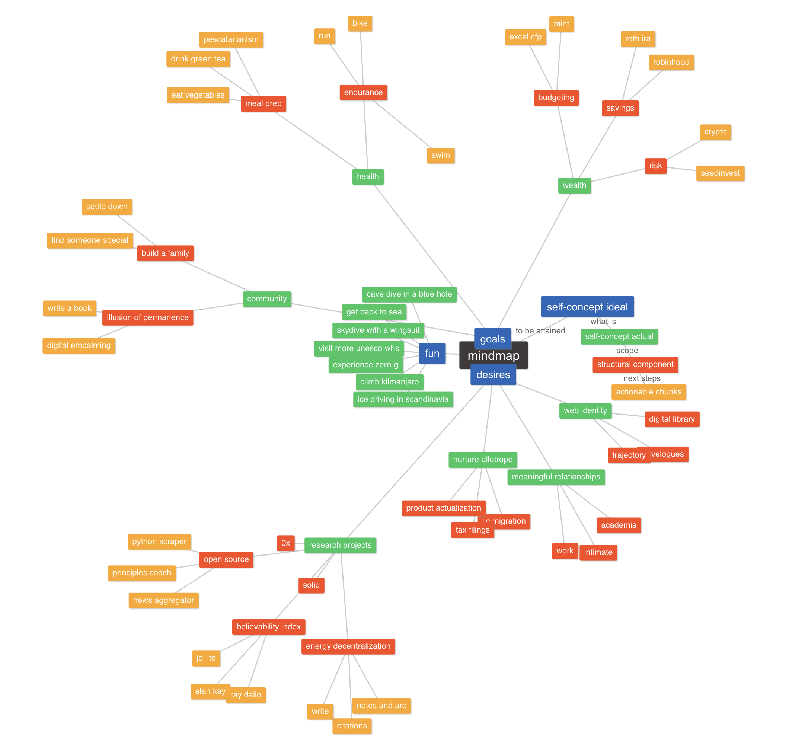
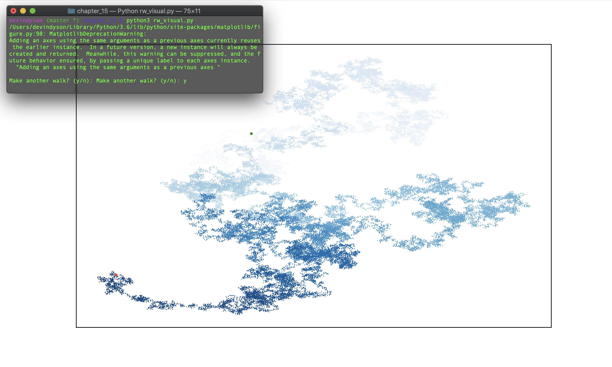
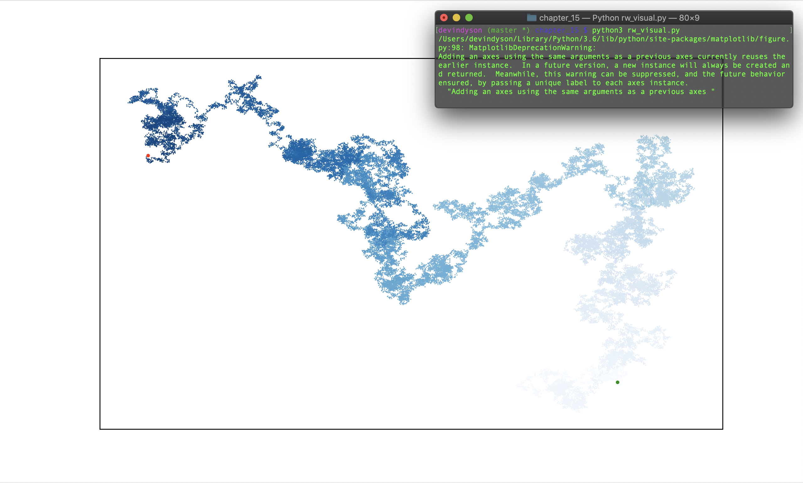
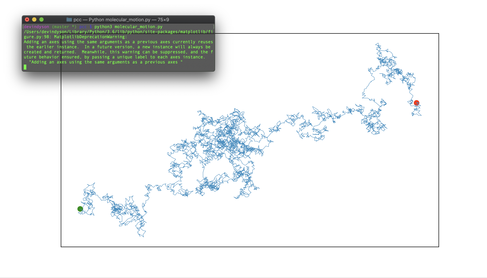

DEVIN DYSON¹
Graduated from Ithaca College in May 2016 with a B.S. in Business Administration and a concentration in International Business.
Today, Devin is living in Boston, Massachusetts. He is passionate about emerging technology, energy markets, and economic development.
To get in touch, please check out his resume, or connect with him on LinkedIn. If you're a dev, fork some of his latest projects on Devpost and or GitHub!
Fund my research using Ether or ERC20 Tokens! 0xfD1add648b811ce1747D657f00acdF07689992DE

Tralfmadorian¹
some inspiration from source
Books I've Read
Books I've Yet To Read
Whitespace
Here's a page filled with some deceptively complex looking programming projects. Ranging from exercises in Python visualizations to setting up virtual machines dedicated to hosting Minecraft servers.
I enjoy simulating these random walks, makes me think that nature is naturally chaotic, confirming beliefs about thermodynamic entropy and the social physics.
The following dice rolling exercises were part of Eric Matthes's Python Crash Course book. Will eventually extrapolate on some of these Gaussian distributions.
Molecular motion uses the same random_walk script as the images above. This script is supposedly mimicing the motion of pollen on the surface of a drop of water. Looks cool.
Together with my roomate, a former systems engineer at RSA, we setup a virtual machine running out of our closet to host a Minecraft server for us and our closest friends. DM for whitelist and IP.
The following Python visualizations were originally done in Jupyter notebook. Using the countries.csv file reccomended from Eric Matthes's book, I wanted to investigate further the populations of South East Asian nations. It's really startling to look at the effects of the Khmer Rouge, Pol Pot and the Cambodian Genocide.
After reading In The Swarm by Byung-Chul Han I felt inspired to deploy a instagram bot. This project was really satisfying and made me think of Alan Kay talking about 'Agents' and having them perform autonomous tasks for humans.

Travelogues
fixing up some content for this tab...
.